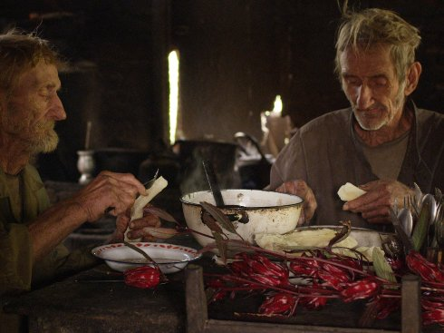

Lamaland 1

Pablo Sigg
|
MX,
CH 2018
German Premiere
91 min | 35mm on HD | no dialogues
B+DOP+S+P+D: Pablo Sigg | E: Emilio del Cañal | With
Friedrich Schweikhart, Max Josef Schweikhart
www.siggfilm.com
|
Sunday | 13 oct 6.30 pm | werkstattkino
Here is the embodiment of Nihilism, perhaps the ultimate diabolic
expression: Life moves nowhere; there is no plan, no telos; the
present circulates endlessly, repetitively, and the matter of the
world itself is falling down into the abyss. Within this bloodless
ontology, two brothers who survived a religious, “utopian” experience
in the 1880’s are devoted to stubbornly perpetuate themselves in a
world marked by monotony and lack of action. The worn-out bodies of
the Schweikhart brothers – the last witnesses of the Arian community
founded by Elizabeth F. Nietzsche in 1887, in a place that was known
as Nueva Germania – seemed to be destined to putrefaction, just as all
living things surrounding them. (Roger Koza)
Pablo Sigg born 1974 in Mexico, is
known for his long research processes. LAMALAND 2 is currently
being cut from the extensive 35mm film material.
|
Films Der Wille zur
Macht 2013 | I, of Whom I Know Nothing 2014 | Lamaland 1 2018
|

{kind=link}